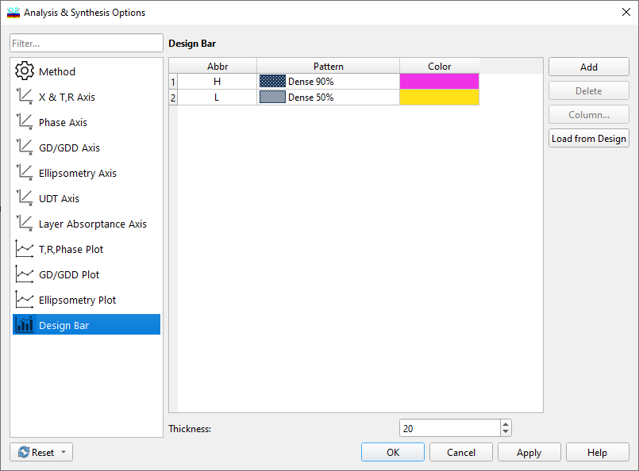

Design Bar Colors
Design Bar Colors
Navigation: OptiLayer Menu Commands > Synthesis Menu > Analysis and Synthesis Options >
Design Bar Colors
` <idh_synthesis_options_plot.html>`__ ` <idh_synthesis_options.html>`__ ` <idh_synthesis_options_material.html>`__
This Analysis/Synthesis feature allows you to set a color and fill a pattern for the design template bar displayed in all graphical windows.

For each layer, you can select an appropriate color and pattern using the Pattern and Color columns. Available colors and patterns can be chosen from the respective popup lists.
The Default button resets the color and pattern to their initial states.
See also: